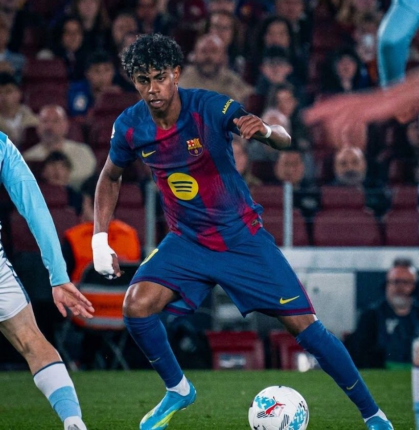
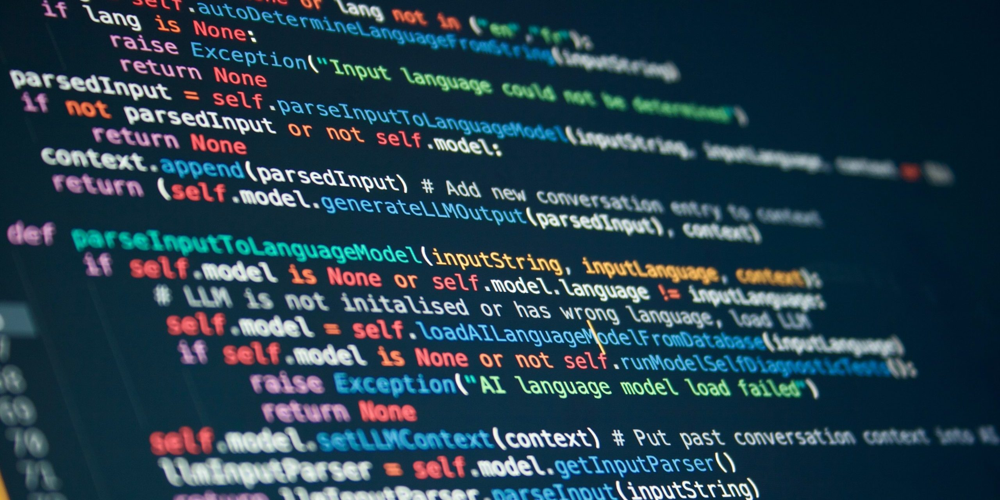
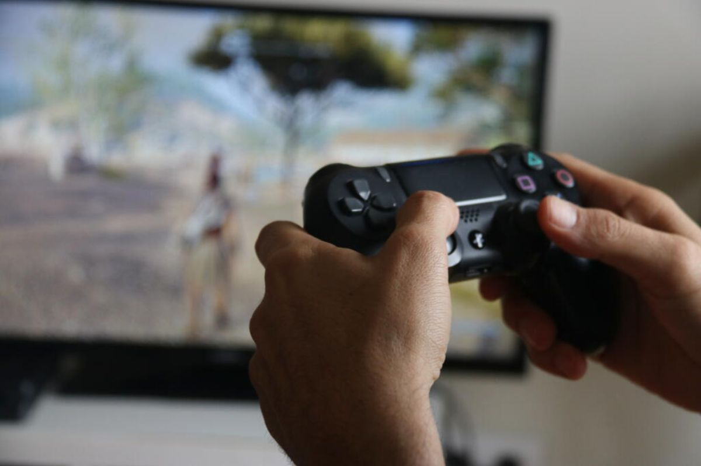

1. Futbol

Jugo partits de futbol amb els amics cada cap de setmana al poliesportiu municipal. És una afició que practico regularment des que tenia vuit anys.
Hola! Em dic Marc i actualment estic estudiant el cicle de Desenvolupament d'Aplicacions Web (DAW).

Jugo partits de futbol amb els amics cada cap de setmana al poliesportiu municipal. És una afició que practico regularment des que tenia vuit anys.

Desenvolupo petits projectes i pàgines web a la meva habitació durant les tardes lliures. Vaig començar fa un parell d'anys per curiositat pel codi.

Jugo a jocs d'estratègia i d'aventura al meu ordinador un parell de cops per setmana per desconnectar, una passió que tinc des de la infància.